MИHИCTEPСTBO
СТРОИТЕЛЬСТВА ПРЕДПРИЯТИЙ
НЕФТЯНОЙ И ГАЗОВОЙ ПРОМЫШЛЕННОСТИ
ВСЕСОЮЗНЫЙ
НАУЧНО-ИССЛЕДОВАТЕЛЬСКИЙ ИНСТИТУТ
ПО СТРОИТЕЛЬСТВУ МАГИСТРАЛЬНЫХ ТРУБОПРОВОДОВ
ВНИИСТ
УКАЗАНИЯ
ПО ПРОЕКТИРОВАНИЮ И МЕТОДИКЕ РАСЧЕТА
МАГИСТРАЛЬНЫХ ГАЗОПРОВОДОВ
ИЗ ТРУБ ДИАМЕТРОМ 1420 мм
ВСН 1-46-73
Миннефтегазстрой
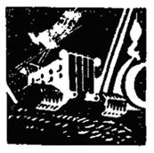
Москва 1974
«Указания по проектированию и методике расчета магистральных газопроводов из труб диаметром 1420 мм разработаны лабораторией методов расчета и конструирования трубопроводов ВНИИСТа в развитие главы СНиПа II-Д.10-62 «Магистральные трубопроводы. Нормы проектирования». Указания разработаны на основе составленных ранее ВНИИСТом «Основных положений по проектированию газопроводов диаметром 1420 мм в условиях пустынь Средней Азии» и «Рекомендаций по методике расчета напряженно-деформированного состояния трубопроводов в условиях Средней Азии» (P-82-71), изданных ОНТИ ВНИИСТа в 1971 г., дальнейших теоретических и экспериментальных исследований, а также опыта проектирования, строительства и эксплуатации газопроводов больших диаметров.
Указания составлены кандидатами техн. наук И.П. Петровым и А.Б. Айнбиндером при участии кандидатов техн. наук А.Г. Камерштейна, М.C. Герштейна и инж. Л.Н. Усс.
Указания согласованы с Государственной газовой инспекцией 13.02.1973 г. и Миннефтегазстроем 23.07.1973 г.
Замечания и предложения просьба направлять по адресу: Москва, 105058, Окружной проезд, 19, ВНИИСТ, лаборатория методов расчета и конструирования трубопроводов.
|
Министерство строительства предприятий нефтяной и газовой промышленности |
Ведомственные строительные нормы |
ВСН 1-46-73 |
|
Миннефтегазстрой |
||
|
Указания по проектированию и методике расчета магистральных газопроводов из труб диаметром 1420 мм |
Разработаны впервые |
1. ОБЩИЕ ПОЛОЖЕНИЯ ПО ПРОЕКТИРОВАНИЮ
1.1. Настоящие указания распространяются на проектирование линейной части (включая переходы через небольшие водные преграды и другие естественные и искусственные препятствия) магистральных газопроводов диаметром 1420 мм, рассчитанных на давление до 75 кгс/см2.
1.2. Проектирование и расчет магистральных газопроводов, рассчитанных на давление более 75 кгс/см2, транспортирующих газы с содержанием коррозионно-активных составляющих, прокладываемых на просадочных или пучинистых грунтах, в районах распространения вечной мерзлоты, сейсмических районах более 8 баллов, а также на подрабатываемых территориях, должны вестись с учетом дополнительных требований, предусмотренных соответствующими нормативными документами.
1.3. При проектировании газопроводов диаметром 1420 мм наряду с настоящими Указаниями следует руководствоваться СНиПом I.Д.4-62 «Магистральные стальные трубопроводы. Материалы и изделия», СНиПом I-B.12-62 «Материалы и металлические изделия», СНиПом II-Д.10-62 «Магистральные трубопроводы. Нормы проектирования», СНиПом II-А.II-62 «Нагрузки и воздействия. Нормы проектирования», СНиПом II-В.3-62 «Стальные конструкции. Нормы проектирования», СНиПом II-Б.5-67 «Свайные фундаменты из забивных свай. Нормы проектирования», СНиПом II-В.1-62 «Бетонные и железобетонные конструкции. Нормы проектирования», СНиПом III-Д.10-72 «Магистральные трубопроводы. Правила производства и приемки работ» а также ГОСТами и техническими условиями на трубы, нормалями на детали трубопроводов и другими нормативными документами.
1.4. Трассу газопровода нужно выбирать в соответствии с требованиями СНиПа II-Д.10-62, с учетом рельефа местности, грунтовых условий (барханных песков, скальных грунтов, мокрых сильно засоленных и обводненных участков, орошаемых земель), пересечения рек, каналов, оврагов и других препятствий, наличия и предполагаемого возведения строений и других местных условий.
1.5. Категория участков газопровода устанавливается с учетом особенностей местности, условий работы и требований безопасности эксплуатации газопровода в соответствии с «Указаниями по определению категорий участков, минимальных расстояний от населенных пунктов и сооружений для газопроводов диаметром 800, 1000, 1200 и 1400 мм» (М., ОНТИ ВНИИСТа, 1968). Подземные участки трубопроводов, пересекающие обводненные сильно засоленные места, относятся ко II категории. Все участки, которые согласно выше поименованным Указаниям отнесены к IV категории, принимаются III категории.
1.6. Допустимые минимальные расстояния от населенных пунктов, промышленных предприятий, дорог, отдельных зданий и сооружений до оси ближайшей нитки газопровода, а также расстояния между параллельными нитками газопровода диаметром 1420 мм принимаются в соответствии с «Указаниями по определению категорий участков, минимальных расстояний от населенных пунктов и сооружений для газопроводов диаметром 800, 1000, 1200 и 1400 мм» (М., ОНТИ ВНИИСТа, 1968) со следующими дополнениями:
в пустынных районах Средней Азии (в барханных песках) расстояние между параллельными нитками при подземной прокладке следует назначать не менее 45 м;
при давлении 75 кгс/см2 для параллельно прокладываемых надземных участков трубопроводов протяженностью более 50 м расстояние между параллельными нитками должно быть не менее 150 м.
|
Внесены Техническим управлением Миннефтегазстроя |
Утверждены Министерством
газовой промышленности |
Срок введения с 1 января 1974 г. Срок действия до замены новым документом |
1.7. Как правило, газопровод проектируется подземным. На отдельных участках, когда это технически и экономически целесообразно, следует применять полузаглубленную, наземную (в насыпях) и надземную прокладку. Способ прокладки газопровода на сложных участках выбирают на основе технико-экономического сравнения вариантов с учетом строительных затрат и эксплуатационных расходов (с учетом эксплуатационной надежности).
1.8. Конструктивные решения следует выбирать с учетом климатических и грунтовых условий, а также условий производства строительно-монтажных работ. При этом необходимо проверять прочность и устойчивость конструкции в процессе сооружения газопровода. В проекте должны быть принципиальные указания о порядке проведения строительно-монтажных работ.
1.9. В условиях пересеченной местности (барханных песков, гор, оврагов) должна предусматриваться предшествующая строительству планировка строительной полосы. Ширина планируемой полосы назначается из условия принятой организации строительно-монтажных работ.
1.10. Ввиду большой изгибной жесткости труб диаметром 1420 мм продольные профили должны составляться для всех участков газопровода (включая равнинные участки, где трубопровод не всегда может изгибаться в соответствии с рельефом местности и где нужны отметки дна траншеи для контроля выполнения основания под трубопровод).
В проекте, помимо отметок поверхности земли и проектного положения трубопровода, необходимо указывать:
планировочные отметки строительной полосы;
глубину траншеи;
толщину слоя грунта на выпуклых вертикальных кривых, обеспечивающую устойчивое положение трубопровода против его выпирания;
отметки реперов и их привязку.
1.11. Реперы, угловые и километровые столбы следует устанавливать за пределами рабочей полосы, отведенной на период строительства.
1.12. При строительстве газопровода диаметром 1420 мм очень важно строго выполнять принятые в проекте радиусы и углы кривых, толщину слоя грунта над трубопроводом в плотном теле, расположение и количество грузов и анкеров, размеры переходов и другие проектные данные. Поэтому на чертежах следует делать специальные надписи, обращающие внимание строителей на важность соблюдения отдельных размеров и положений, в частности, указывать толщину слоя грунта над трубой в рыхлом состоянии. Коэффициент разрыхления принимается 1,15 ¸ 1,25, в зависимости от грунтов. Так, для барханных песков Средней Азии он принимается равным 1,15.
1.13. На многониточных газопроводах надлежит проектировать перемычки между нитками, а также предусматривать устройство перемычек для подключения последующих ниток газопровода, если строительство их оговорено в проекте. Перемычки следует располагать у компрессорных станций (вблизи территории КС) и между компрессорными станциями, где установлены линейные краны.
Краны и перемычки следует размечать в наиболее доступных для подъезда местах.
1.14. Для очистки газопровода в процессе эксплуатации необходимо предусмотреть применение поршней с запуском и приемом их у компрессорных станций, а также у переходов через препятствия и в других местах, где не возможен сквозной проход очистных устройств.
На участках газопровода, включая фасонные части и запорные устройства, между пунктами запуска и приема очистных устройств должен быть беспрепятственный проход поршней.
1.15. При разработке проекта организации и производства работ надлежит учитывать полученную на основании расчета на прочность величину температурного перепада, не допуская его превышения. В проекте следует указать интервалы температуры воздуха, в пределах которых производится укладка в траншею длинных плетей (более 300 м), сварка захлестов и засыпка уложенного трубопровода грунтом.
1.16. Выбор типа и конструкции изоляционных покрытий, а также проектирование электрической защиты трубопроводов от коррозии производятся в соответствии с действующими нормативными документами.
2. УКАЗАНИЯ ПО ПРОЕКТИРОВАНИЮ
ТРУБЫ И ФАСОННЫЕ ЧАСТИ
2.1. Сталь труб для газопроводов диаметром 1420 мм и отклонения в размерах должны отвечать требованиям технических условий на производство и поставку этих труб.
Толщина стенки труб определяется расчетом в соответствии с разделом 3 настоящих Указаний.
2.2. Фасонные части, отключающая и регулирующая арматура должны быть рассчитаны на установленное проектом рабочее давление. Фасонные части и арматуру следует присоединять к трубам при помощи сварки (с применением при необходимости переходных колец), обеспечивающей прочность сварных соединений, равную прочности основного металла труб (без создания концентраторов напряжений).
Все сварные швы, присоединяющие фасонные части и арматуру к трубе, необходимо контролировать физическими методами (просвечиванием или ультразвуком).
Сварные колена надлежит изготавливать централизованным способом (заводским или в мастерских) с внутренней подваркой всех сварных швов и 100 %-ным контролем их физическими методами (просвечиванием или ультразвуком).
Колена могут быть штампосварными или сваренными из сегментов, число которых при угле 90° и радиусе кривизны 5D должно быть не менее семи (включая крайние сегменты). Плоскости приварки труб должны быть перпендикулярными их осям. Угол, образуемый при сварке сегментов, не должен быть более 15°. Централизованным способом изготовляются колена с углами поворота 3, 6, 9, 12, 18, 24, 36, 45 и 90°, которые следует в основном применять в проектах. Остальные углы (с градацией в 3°) образуются путем сварки двух указанных выше колен с внутренней подваркой корня шва и контролем качества сварных швов физическим методом (просвечиванием или ультразвуком).
2.4. Тройники и переходники должны применяться только централизованной (заводской или цеховой) заготовки. Их необходимо рассчитывать на восприятие установленного рабочего давления и подвергать гидравлическому испытанию (Рисп = 1,25Ppаб).
Все сварные ивы должны быть двухсторонними, проверенными физическим методом контроля. Расстояние между продольными и поперечными сварными швами труб и швами вварки ответвлений или приварки укрепляющих колец должно быть не менее 200 мм.
Равнопроходные тройники и неравнопроходные, когда диаметр присоединяемой трубы 720 мм и более, следует выполнять с внутренними направляющими, препятствующими повороту поршня в отвод.
2.5. Трубы соединяются встык при помощи автоматической сварки под флюсом или ручной дуговой сварки с подваркой корня шва.
Применяемые сварочные материалы и технологические процессы должны обеспечивать равнопрочность сварных соединений основному металлу труб.
ПОДЗЕМНАЯ, НАЗЕМНАЯ (В НАСЫПЯХ) И ПОДВОДНАЯ ПРОКЛАДКА
2.6. Подземная прокладка газопровода является основным видом прокладки. В необходимых случаях глубина заложения трубопровода в грунт может быть уменьшена за счет отсыпки над ним насыпи, т.е. применения полузаглубленной прокладки.
2.7. Полузаглубленная прокладка применяется при пересеченном рельефе с целью уменьшения объема земляных работ и увеличения радиусов кривых изгиба трубопровода, при скальных грунтах, при высоком уровне стояния грунтовых вод и в других случаях, когда это технически и экономически оправдано.
2.8. Наземную прокладку газопровода (в насыпи) следует применять на высококоррозионных участках, на участках, где длительное время поверхность залита водой, при пересечении болот.
2.9. Для проектирования трубопроводов диаметром 1420 мм и расчета выбранных конструктивных решений при изысканиях трассы, помимо обычных данных, надлежит определять:
минимальный объемный вес грунта в естественном и разрыхленном состоянии;
угол внутреннего трения грунта в естественном и разрыхленном состоянии;
коэффициент сцепления грунта;
на обводненных участках - коэффициент пористости и удельный вес скелета в естественном и разрыхленном состоянии, а также удельный вес воды с учетом растворенных в ней солей.
Пробы берутся в местах, характерных для данных участков трассы.
2.10. Поперечный профиль траншей и насыпей устанавливается в зависимости от грунтов, глубины заложения и метода производства работ для каждого характерного участка газопровода с учетом конструктивных особенностей данного участка (кривых вставок, утяжеляющих грузов, анкерных устройств и т.п.).
Продольный профиль дна и план траншей должны проектироваться с учетом принятых на основании расчетов углов и радиусов изгиба труб, а также продольной жесткости труб (изгиба под действием собственного веса, возможности изгиба труб при производстве работ и других факторов).
Высота слоя грунта над трубопроводом назначается с учетом последующей осадки, исходя из условий устойчивости положения трубопровода и его защиты от механических повреждений.
2.11. Толщина сдоя грунта над трубопроводом в уплотненном состоянии должна быть не менее 0,8 м (рис. 1), а в пределах сыпучих песков, рыхлых пылеватых грунтов и обрабатываемых земель - не менее 1,0 м.
Толщина слоя грунта над трубопроводом должна быть увеличена, если это требование диктуется расчетом продольной устойчивости трубопровода или условиями выполнения сельскохозяйственных и мелиоративных работ.
Установленная толщина слоя грунта должна быть обеспечена на все время эксплуатации трубопровода. При необходимости следует закреплять грунты и трубопровод. Против размыва и выветривания грунты можно закреплять путем обработки поверхности склеивающими составами (нерозином, битумными эмульсиями) с последующим посевом растений (псаммофитов). Закрепление трубопровода может производиться с помощью анкерных устройств.
Рис. 1. Подземная укладка трубопровода
Рис. 2. Укладка трубопровода:
а - полузаглубленная; б - наземная
Рис. 3. Подземная укладка газопровода в сухих песках
2.12. При полузаглубленной прокладке над трубопроводом насыпается насыпь в соответствии с рис. 2.
Поперечная устойчивость трубопровода на прямолинейных и криволинейных участках обеспечивается при заглублении его в грунт не менее чем на 0,7 диаметра труб (независимо от размера насыпи).
2.13. Ширина траншеи по дну назначается не менее 2,1 м, если стенки траншеи в нижней части вертикальные.
При наличии откосов, начиная от дна траншеи, ее ширина по дну может быть уменьшена до 1,9 м. При этом на высоте 0,7 м от дна траншеи она должна иметь ширину не менее 2,1 м.
По верху траншея должна быть не менее 2,8 м (из условия - производства изоляционно-укладочных работ совмещенным методом).
В местах, где устанавливаются утяжеляющие грузы, ширина траншей по низу должна быть не менее внешних габаритов грузов плюс 0,4 м.
2.14. При прокладке трубопроводов в условиях сыпучих песков, угол внутреннего трения которых равен 15 - 25°, производится срезка грунта на ширине рабочей полосы (с учетом прохода механизмов), в пределах которой роется траншея не на полную глубину (рис. 3). Глубина траншеи назначается в зависимости от грунтовых условий и метода производства работ.
2.15. Для обеспечения устойчивого положения газопровода диаметром 1420 мм на прямолинейных участках при полузаглубленной и наземной (в насыпи) прокладке ширина насыпи по верху в течение эксплуатации должна быть не менее 2,2 м с наклоном откосов не менее угла естественного откоса грунта, из которого отсыпана насыпь, и во всех случаях - не менее чем 1:1,25 (см. рис. 2, б).
Насыпь должна быть закреплена против разрушения ветром и водой (в песках - путем пропитки верхнего слоя грунта или другими методами).
2.16. Перед отсыпкой насыпи планируется основание под трубопровод.
В скальных и каменистых грунтах после планирования основания под трубопровод при наземной прокладке, а также после рытья траншеи (при полузаглубленной и подземной прокладке) отсыпается выравнивающий слой рыхлого грунта толщиной не менее 0,2 м над выступающими неровностями, предохраняющий изоляцию трубопровода от повреждений. Этим же грунтом засыпается траншея выше верха трубопровода на 0,15 ¸ 0,2 м. При наземной прокладке отсыпается небольшая насыпь из рыхлого грунта, защищающая изоляцию трубопровода от повреждений камнями.
2.17. Насыпь или грунтовой валик, отсыпаемый над трубопроводом, не должны препятствовать стоку воды. Для этого в пониженных местах необходимо устраивать водопропускные сооружения.
Водопропускные сооружения, в зависимости от высоты насыпи и количества пропускаемой воды, выполняются в виде железобетонных труб, лотков и открытых канав, которые пересекаются трубопроводом выше уровня воды (в виде надземной балочной или иной конструкции), или в виде лотков, устраиваемых над заглубленным в грунт трубопроводом.
Дно водопропускных сооружений и примыкающие к ним откос и насыпи укрепляются железобетонными плитами, камнем или одерновкой.
Количество водопропускных сооружений и их размеры назначаются в соответствии с требованиями СНиПа II-Д.7-62 «Мосты и трубы. Нормы проектирования».
2.18. В тех случаях, когда при подземной и наземной прокладках на необводненных участках радиус трубопровода в вертикальной плоскости меньше 3000 м (стрела изгиба в пределах 100 м превышает 0,4 м) и в горизонтальной плоскости менее 2000 м (стрела изгиба в пределах 100 м превышает 0,6 м), толщину слоя грунта над трубопроводом и размеры насыпи надлежит определять на основании расчета в соответствии с разделом 3 настоящих Указаний. Однако эти размеры нельзя назначать меньше указанных в пп. 2.11, 2.15.
На обводненных участках поверочный расчет необходимо выполнить во всех случаях, включая и прямолинейные участки.
2.19. Если на основании расчета продольной устойчивости трубопровода размеры насыпи или заглубления трубопровода в грунт получаются больше минимальных размеров, установленных настоящими Указаниями, то их нужно принимать в соответствии с расчетом.
Устойчивость трубопровода на выпуклых вертикальных кривых может быть также обеспечена путем укладки над трубопроводом железобетонных ящиков с грунтом, установки на трубопровод железобетонных или иных грузов и анкерных устройств (рис. 4).
На вертикальных выпуклых кривых, где возможен вынос грунта ветром и размыв, поверхностный слой грунта обязательно должен закрепляться пропиткой связующими материалами или другим способом.
2.20. Повороты газопровода в любой плоскости осуществляются путем упругого изгиба, вварки сварных колен и колен машинного гнутья, отвечающих требованиям пп. 2.3 - 2.4 (рис. 5).
Рис. 4. Пригрузка трубопровода железобетонными плитами и ящиками, загруженными грунтом:
1 - грунт, пропитываемый связующими материалами; 2 - железобетонная плита; 3 - железобетонный ящик
Рис. 5. Образование кривых большого радиуса
2.21. Минимальные радиусы кривых упругого изгиба труб определяются на основании расчета труб на прочность и на продольную устойчивость трубопровода согласно разделу 3 настоящих Указаний.
Для трубопроводов диаметром 1420 мм радиусы упругого изгиба нельзя принимать менее 1500 м в вертикальной плоскости и менее 2000 м в горизонтальной плоскости.
2.22. Если радиус упругого изгиба ограничен условиями прочности трубопровода и условиями производства работ, то поворот газопровода выполняется меньшим радиусом за счет вварки стандартных колен централизованного (на заводе или в специально оборудованном цехе) изготовления с углом в 3° и прямых вставок между ними, т.е. путем замены плавной кривой ломаной линией.
Расстояние между углами при радиусе кривой r (в метрах равняется 0,052r (см. рис. 5). В этом случае продольные напряжения из условия прочности не проверяются, но необходима проверка трубопровода на продольную устойчивость согласно раздела 3 настоящих Указаний.
2.23. Кривые с радиусом изгиба оси 60 - 100 м образуются путем гнутья труб или сварки сегментов с углами 3 и 6° (рис. 6).
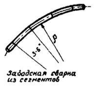
Рис. 6. Колена машинного гнутья и колена, сваренные из сегментов
Применение колен малых радиусов на выпуклых вертикальных кривых требует, как правило, специальных конструктивных мероприятий по закреплению газопровода против выпучивания (выпирания из грунта) или по снижению продольного усилия (путем устройства компенсаторов). При выполнении расчетов надлежит руководствоваться положениями, изложенными в разделе 3 настоящих Указаний.
2.24. Углы поворота в вертикальной плоскости (более 9°), обращенные выпуклостью вверх и образованные путем вварки сварных колен и колен машинного гнутья, следует разбивать на несколько углов с прямолинейными вставками между ними, а затем проверять продольную устойчивость согласно разделу 3 настоящих Указаний.
2.25. На выпуклых вертикальных кривых, образованных с помощью колен, устойчивое положение трубопровода обеспечивается за счет увеличения толщины слоя грунта над трубопроводом или его пригрузки железобетонными плитами, ящиками, заполненными грунтом, грузами или анкерами.
2.26. Все косые стыки должны свариваться с двух сторон исключительно в заводских условиях или в мастерских со 100 %-ным контролем сварных соединений физическим методом (просвечиванием). Сварка косых стыков в полевых условиях не допускается. Концы колен должны быть перпендикулярны осям труб. Расстояние между соседними поперечными сварными швами во всех случаях должно быть не менее 0,6 м.
Монтажные стыки, выполняемые в условиях трассы (захлесты) следует располагать на прямых участках. При этом косина свариваемых стыков не должна выходить за пределы допуска на несоосность свариваемых труб (на условия производства работ).
2.27. На обводненных участках трассы и на подводных переходах газопровод должен быть запроектирован и рассчитан с учетом обеспечения устойчивости его положения против всплытия в соответствии со СНиПом II-Д.10-62 и разделом 3 настоящих Указаний. Устойчивость положения газопровода против всплытия в зависимости от конкретных местных условий обеспечивается одним из следующих способов или их комбинаций: балластировкой грунтом, железобетонными плитами или ящиками, загруженными грунтом, железобетонными седловидными грузами, сборными железобетонными скорлупами, сплошным обетонированием или винтовыми анкерными устройствами.
2.28. Балластировку газопровода грунтом следует предусматривать на обводненных участках трассы и на переходах через реки и каналы, где в качестве засыпки над трубопроводом используются устойчивые грунты и не возможен их размыв.
Для предотвращения размыва грунта его следует закреплять связующими материалами, применять железобетонные платы или использовать другие методы, обеспечивающие проектное положение трубопровода.
При проектировании следует руководствоваться «Указаниями по балластировке грунтом стальных трубопроводов, прокладываемых на обводненных участках» (М., ОНТИ ВНИИСТа, 1971) и разделом 3 настоящих Указаний.
2.29. Балластировку железобетонными седловидными грузами или сборными железобетонными скорлупами следует применять для закрепления трубопроводов на переходах через небольшие водные преграды, включая русловую часть, когда не возможен размыв дна. При значительной скорости течения воды, когда возможен размыв, применение седловидных грузов в пределах русла не допускается.
2.30. Переходы газопроводов через небольшие реки и каналы, где это целесообразно, рекомендуется проектировать с использованием продольной жесткости труб, закрепляя трубопровод против всплытия в основном на берегах (рис. 7).
Такие переходы рассчитываются согласно методике, изложенной в разделе 3 настоящих Указаний.
2.31. Подводные трубопроводы на переходах через реки и каналы, запроектированные с учетом продольной жесткости труб, при недостаточной массе расположенного над трубопроводом грунта, следует дополнительно закреплять против всплытия железобетонными плитами, ящиками, грузами или анкерными устройствами. Последние устанавливаются в пределах расчетной длины береговых участков, удерживающих трубопровод против всплытия.
2.32. Закрепление газопровода анкерными устройствами против всплытия на обводненных участках и против выпучивания на вертикальных выпуклых кривых применяется в тех случаях, когда нет подмыва грунта и лопасти анкеров располагаются в устойчивом грунте, обладающем достаточной несущей способностью.
При проектировании анкерных устройств следует руководствоваться «Указаниями по применению анкерных устройств для закрепления трубопроводов» (М., ОНТИ ВНИИСТа, 1968).
2.33. Глубина заложения газопровода на переходах через водные преграды в русловой части должна быть не менее 0,5 м от уровня возможного размыва дна.
При определении глубины заложения трубопровода на реках и каналах надлежит учитывать возможные деформации русла в связи с намечаемым изменением водного режима, предполагаемыми работами по углублению дна и расширению русла.
Ширина траншеи при подводной прокладке газопровода назначается в зависимости от конкретных условий перехода и применяемых для разработки траншей механизмов.
Рис. 7. Схемы подводных переходов с использованием продольной жесткости труб:
а - балочные с прямолинейной
частью; б - балочные с упругим изгибом;
в - однопролетные рамного типа; г - двухпролетные рамного типа
На переходах через водные преграды необходимо предусматривать противоэррозионные мероприятия и укрепление берегов.
На переходах с крутыми и неровными берегами следует досматривать срезку грунта в соответствия с принятым в очертанием оси трубопровода и с учетом механизированного выполнения земляных и монтажных работ.
КОМПЕНСАЦИЯ ПРОДОЛЬНЫХ ДЕФОРМАЦИЙ И УМЕНЬШЕНИЕ ПЕРЕМЕЩЕНИЙ ГАЗОПРОВОДОВ ПРИ ПОДЗЕМНОЙ И НАЗЕМНОЙ (В НАСЫПИ) ПРОКЛАДКЕ
2.34. В тех случаях, когда при подземной и наземной (в насыпях) прокладке газопровода с высокой температурой транспортируемого газа не обеспечивается прочность или продольная устойчивость (согласно методике, изложенной в разделе 3 настоящих Указаний), величина продольных напряжений может быть снижена за счет частичной компенсации продольных деформаций при помощи одного или нескольких последовательно расположенных компенсаторов.
2.35. Компенсаторы следует устанавливать в местах выпуклых кривых или на примыкающих к ним участках трассы.
Если установлено несколько компенсаторов, то расстояние между ними определяется из условия снижения величины продольных напряжений (нормальной силы) до требуемой по расчету величины. Расчет выполняется согласно разделу 3 настоящих Указаний.
Компенсаторы рационально устанавливать в сухих рыхлых грунтах (сыпучих песках, сухих пылеватых грунтах и др.), обладающих малой удерживающей способностью против продольных смещений трубопровода.
2.36. Для снижения продольных напряжений в газопроводе рекомендуется применять трапецеидальные компенсаторы.
При диаметре труб 1420 мм расчетные вылеты компенсаторов получаются большими, поэтому их следует располагать наклонно, опирая спинку на одну свободноподвижную опору (рис. 8).
2.37. Для уменьшения продольных перемещений газопровода у мест выхода из грунта, в местах примыкания к компрессорам и газораспределительным станциям, в узлах пуска и приема очистных устройств, у перемычек около задвижек и в других местах следует устанавливать открытые или подземные трапецеидальные, П или Z-образные компенсаторы-упоры.
Рис. 8. Схема трапецеидального компенсатора
При использовании подземных или наземных (в насыпи) компенсаторов необходима проверка их напряженно-деформативного состояния с учетом отпора грунта.
Вылет Z-образных компенсаторов принимается таким же, как для открытых, рассчитываемых для данных условий, а трапецеидальных и П-образных - на 10 - 20 % меньше открытых.
2.39. Для устройства компенсаторов применяются колена холодного гнутья, а в стесненных условиях сварные колена заводского изготовления с радиусом изгиба ρm более пяти диаметров трубы (не менее 7 м) согласно рис. 9.
2.40. Во избежание перенапряжения труб подземные компенсаторы-упоры следует применять с коленами 36 - 60° согласно рис. 10: Z-образные компенсаторы-упоры с углами 45 - 60°; симметричные трапецеидальные с углами 45°; несимметричные трапецеидальные с углами 36 - 48° со стороны передачи усилия и 45 - 60° с другой стороны.
Трапецеидальные подземные компенсаторы-упоры почти полностью предотвращают передачу усилия на соседний участок трубопровода, a Z-образные в несколько раз снижают его величину. У компенсаторов между коленами (отводами) должны ввариваться прямые вставки длиной не менее пяти диаметров трубы. Размеры компенсаторов устанавливаются расчетом (см. пп. 2.37, 2.38).
2.41. Передача усилия на соседний участок трубопровода уменьшается с увеличением угла колен, но при этом возрастают напряжения в компенсаторах-упорах.
Напряжения в компенсаторах-упорах уменьшаются с увеличением радиуса изгиба колен, поэтому рекомендуется применять колена с радиусами изгиба более 30 м (колена холодного гнутья).
2.42. Около компрессорных и газораспределительных станций, где длины примыкающих к компенсаторам прямых участков газопроводов невелики и диаметры труб менее 1420 мм, для подземных компенсаторов-упоров разрешается применять колена с углами более 60° и радиусы изгиба до двух диаметров труб.
Около компрессорных и газораспределительных станций компенсаторы-упоры выполняются согласно рис. 11, а или 11, б. В случае применения трапецеидального компенсатора передача усилия будет значительно меньше.
2.43. Для уменьшения продольных усилий, передающиеся на подводные или надземные переходы трубопроводов от примыкающих к ним подземных участков, около переходов устраиваются Z-образные (см. рис. 10, а и 11, в) или трапецеидальные (см. рис. 10, б) подземные компенсаторы-упоры.
Применение компенсаторов-упоров позволяет увеличить пролеты бескомпенсаторных надземных переходов, увеличить устойчивость выпуклых вертикальных кривых на подводных переходах и уменьшить нагрузки на тройники, краны и перемычки многониточных подводных переходов.
Рис. 9. Сварное колено заводского изготовления
2.44. В местах выпуска и приема очистных устройств надлежит устанавливать надземные или подземные (рис. 11, г) трапецеидальные компенсаторы-упоры, намного снижающие продольные перемещения труб у мест выхода их из грунта. Подземные компенсаторы-упоры следует располагать, по возможности, ближе к камерам впуска и приема очистных устройств.
а)
б)
в)
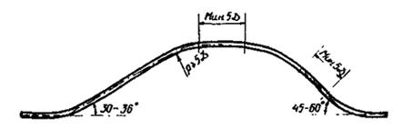
Рис. 10. Схемы подземных компенсаторов-упоров:
а - Z-образный; б - трапецеидальный симметричный; в - трапецеидальный несимметричный
2.45. В местах установки кранов, устройства ответвлений и перемычек смещения труб должны быть сведены к минимуму, для чего в пределах перемычек между параллельными нитками газопроводов, а также на отводящих трубопроводах около мест их примыкания к магистралям надлежит устраивать Z-образные подземные компенсаторы (рис. 11, д) с углами 45 - 60°. Траншея, в которую уложена перемычка или отводящий трубопровод около места примыкания к магистрали и в пределах компенсатора, должна засыпаться рыхлым податливым грунтом (торфом).
а)
б)
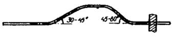
в)
г)
д)
е)
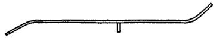
Рис. 11. Применение подземных компенсаторов-упоров:
а - около
компрессорных станций; б - около газораспределительных станций;
в - около перехода через естественные препятствия; г - около камеры запуска или
приема очистного устройства; д - на перемычке между двумя параллельными
нитками;
е - использование поворотов трассы при выборе места примыкания отводящего
трубопровода
Запорные устройства на магистральных трубопроводах следует располагать на расстоянии 200 - 300 диаметров труб от перемычки или отводящего трубопровода.
2.46. При выборе мест примыкания отводящих трубопроводов, устройства перемычек и установки запорных устройств следует учитывать наличие углов поворота трассы и использовать их в качестве ограничителей продольных смещений трубопровода (рис. 11, в).
НАДЗЕМНЫЕ ПЕРЕХОДЫ ЧЕРЕЗ ПРЕПЯТСТВИЯ
2.47. При пересечении оврагов, ущелий и небольших водных преград следует применять прямолинейные бескомпенсаторные переходы, консольные трапецеидальные переходы с двумя или большим числом опор (с наклонными компенсационными участками по концам) и переходы с несколькими трапецеидальными участками, расположенными по обе стороны оси трассы (рис. 12 - 14).
Рис. 12. Однопролетный прямолинейный бескомпенсаторный переход
2.48. Компенсаторы и надземные переходы, как правило, надлежит проектировать с учетом пропуска поршня для очистки полости газопровода. Учитывая это, компенсационные участки рекомендуется располагать под углом 36 - 60° к продольной оси трубопровода и применять колена с радиусом изгиба оси не менее пяти диаметров трубы.
Колена заводского изготовления, сваренные из сегментов согласно п. 2.3 должны иметь угол поворота оси в местах сварки сегментов не более 15°. Колена компенсаторов должны рассчитываться с коэффициентом условий работы mz, равным 0,75.
Рис. 13. Схемы переходов с компенсацией продольных деформаций
2.49. Прямолинейные балочные надземные переходы без компенсации продольных деформаций проектируются одно- и двухпролетными. Разрешается рассчитывать их с учетом развития пластических деформаций в расчетном сечении согласно методике, изложенной в разделе 3 настоящих Указаний.
2.50. Надземные переходы с компенсацией продольных деформаций служат одновременно компенсаторами для примыкающих к переходам подземным участкам, что необходимо учитывать при определении вылетов компенсаторов. Компенсаторы надземных переходов у мест выхода газопровода из грунта рационально располагать наклонно к горизонтальной плоскости под углом 25 - 35°.
Рис. 14. Надземная параллельная прокладка трубопроводов
2.51. В одно- и двухпролетных переходах, проектируемых согласно рис. 13, под «спинками» компенсаторов предусматривается устройство свободноподвижных опор. Плоскости, по которым перемещаются трубы, должны иметь длину, превышающую расчетную не менее чем в 1,5 раза плюс 0,5 м (допуск дается на неточности при стыковке труб в процессе их сварки и при укладке трубопровода на опоры во время монтажа).
По концам площадок скольжения трубопровода делаются упоры. В местах скольжения к трубам на хомутах крепятся подкладки или башмаки, предотвращающие смятие труб в местах передачи сосредоточенных нагрузок и повреждение их при скольжении по опорам.
2.52. При отсутствии неподвижных опор в пределах надземного балочного перехода каждый из расположенных по его концам компенсаторов рассчитывается на продольное перемещение трубопроводов в месте выхода его из грунта плюс 0,75 величины изменения длины надземной части трубопровода (от внутреннего давления и изменения температуры стенок труб).
При наличии неподвижных опор в пределах надземной части трубопровода расчетная длина надземного компенсационного участка определяется от ближайшей неподвижной опоры.
При четырех пролетах среднюю опору желательно делать неподвижной. При шести пролетах, помимо неподвижной средней опоры, соседние с ней опоры (по одной с каждой стороны) следует проектировать продольно-подвижными (см. рис. 13). При восьми и большем числе пролетов может потребоваться устройство промежуточных компенсационных участков (см. рис. 13 и 14).
Поворот оси трубопровода в плане осуществляется за счет увеличения одного из углов компенсационных участков. Смещение оси трассы в сторону достигается за счет одностороннего расположения компенсаторов (см. рис. 14, б).
2.53. Расстояние между опорами надземных переходов устанавливается на основании статического и динамического (динамического воздействия ветровой нагрузки) расчета газопровода.
Расстояния между опорами должны быть: при одном и двух пролетах - не более 55 м; при трех пролетах - не более 50 м (или для среднего - 55 м и для крайних - 45 м); при четырех-пяти пролетах - не более 45 м; при большем числе пролетов - более 35 - 40 м.
При числе пролетов более шести рекомендуется чередовать пролеты большей и меньшей величины (по 2 - 3 пролета одного размера), отличающиеся в 1,4 ¸ 1,5 раза. В этом случае большие пролеты можно принимать длиной до 45 м.
2.54. Высота расположения надземных переходов через препятствия и компенсаторов над поверхностью воды или земли принимается в зависимости от местных условий и системы прокладки газопровода, но не должна быть меньше следующих величин, м:
Над уровнем земли, где не требуется проезд машин и проход людей............ 0,5
Над уровнем обрабатываемых земель по согласованию.................................. 3,0
Над автомобильными дорогами по согласованию............................................ 5,5
Над наивысшим горизонтом каналов и несудоходных рек
при 1 % обеспеченности по согласованию........................................................ 1,5
2.55. Применяются следующие типы опор: свайные или на стойках (рис. 15, а), железобетонные поверхностные (рис. 15, б), железобетонные по земляным призмам и др.
Опоры должны быть рассчитаны на восприятие не только вертикального давления, но и горизонтальных усилий, действующих вдоль и перпендикулярно оси трубопровода. Нагрузки на опоры определяются в соответствии со СНиПом II-Д.10-62.
На сильнозасоленных мокрых участках трассы для опор должны применяться бетоны плотного состава на сульфатостойком цементе.
На участках газопровода, где запроектирована электрозащита труб от коррозии, должна быть предусмотрена изоляция трубопровода от опор или грунта.
Рис. 15. Схемы промежуточных опор надземных переходов
3. УКАЗАНИЯ ПО МЕТОДИКЕ РАСЧЕТА
ОСНОВНЫЕ РАСЧЕТНЫЕ ПОЛОЖЕНИЯ И ФОРМУЛЫ
3.1. Нагрузки на трубопровод определяются в соответствии со СНиПом II-Д.10-62 «Магистральные трубопроводы. Нормы проектирования», СНиПом II-Д.11-62 «Нагрузки и воздействия. Нормы проектирования» и настоящими Указаниями.
При расчете подземных, наземных (в насыпях) и надземных трубопроводов принимаются наиболее неблагоприятные сочетания нагрузок и воздействий.
При расчете надземных газопроводов необходимо учитывать дополнительные нагрузки, возникающие при гидравлическом испытании трубопровода и пропуске очистных устройств (в соответствующем сочетании с другими видами нагрузок).
3.2. Усилия и моменты в магистральных газопроводах определяются по упругой стадии их работы согласно общим правилам строительной механики.
Расчетная схема должна отражать условия строительно-монтажных работ, характер воздействий и нагрузок в процессе эксплуатации.
3.3. Толщина стенки труб определяется расчетом на внутреннее давление по СНиПу II-Д.10-62 с проверкой соблюдения условия, чтобы испытательное давление на трассе не превышало питательного давления, установленного для данных труб.
Толщину стенки труб, полученную расчетом на прочность воздействием внутреннего давления, необходимо увеличивать при большом положительном расчетном температурном перепаде, когда это вытекает из расчета (согласно п. 3.6 настоящих Указаний)
В противном случае необходимо принимать меры для уменьшения расчетного положительного температурного перепада или с помощью различных конструктивных мероприятий сокращать величину продольных осевых сжимающих напряжений.
3.4. Расчетный температурный перепад устанавливается для конкретных условий прокладки трубопровода в зависимости от температуры транспортируемого по трубопроводу продукта, климатических и геологических условий, условий строительства (сварки трубопровода в плеть и его укладки) и системы прокладки.
Величина расчетного температурного перепада определяется как разница между наивысшей или наинизшей расчетной температурой газа (в процессе эксплуатации) на данном участке трассы и температурой стенок трубопровода (в процессе строительства), при которой ограничиваются перемещения трубопровода после его укладки в проектное положение.
При назначении расчетного перепада температуры надлежит учитывать возможное развитие системы газопроводов, ввод дополнительных компрессорных станций и возможные остановки работы трубопровода.
При высокой температуре транспортируемого газа при подземной и наземной прокладке выполнение изоляционно-укладочных работ (с целью экономии металла) следует проектировать в такой последовательности, чтобы в самое холодное время года строились участки, наиболее удаленные от компрессорных станций.
Для каждого участка газопровода между компрессорными станциями на основании расчетов строится график минимальных температур воздуха, ниже которых не разрешается вести изоляционно-укладочные работы и засыпку трубопровода грунтом. Графики строятся с учетом изменения температуры и внутреннего давления газа по мере удаления от компрессорной станции.
3.5. Расчет магистральных стальных газопроводов выполняется по методу предельных состояний. В зависимости от вида и конструктивного решения прокладки трубопровода устанавливаются соответствующие критерии предельных состояний, т.е. таких состояний, при которых невозможна дальнейшая эксплуатация рассматриваемых участков газопроводов.
где sкц - кольцевые напряжения, кгс/см2, от расчетного внутреннего давления, определяемые по формуле (6);
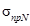
R1 - расчетное сопротивление, кгс/см2, определяемое согласно СНиПу II-Д.10-62.
Исходя из условия (1) номинальную толщину стенки магистрального трубопровода определяют по формуле
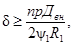
где п - коэффициент перегрузки рабочего (нормативного) давления в газопроводе, определяемый согласно СНиПу II-Д.10-62;
р - рабочее (нормативное) давление в трубопроводе, кгс/см2;
Двн - внутренний диаметр трубы, см;
y1 - коэффициент снижения расчетного сопротивления металла труб, учитывающий величину осевых сжимающих продольных напряжений. При растягивающих осевых продольных напряжениях |sпрN > 0| коэффициент принимается равным единице;
при сжимающих осевых продольных напряжениях |sпрN < 0| определяется по формуле
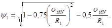
В формулу (3) подставляется абсолютное значение |sпрN| осевых продольных сжимавших напряжений.
Условие прочности в продольном направлении, как следует из (1), имеет вид:
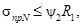
где sпрN - величина осевых продольных сжимающих или растягивающих напряжений от расчетных нагрузок и воздействий, кгс/см2;
y2 - коэффициент снижения расчетного сопротивления. При растяжении |sпрN > 0| принимается равным единице, при сжатии |sпрN < 0| определяется по формуле
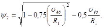
Кольцевые напряжения в стенках труб от расчетного внутреннего давления определяются по формуле
3.7. При подземной и наземной (в насыпи) прокладке газопроводов кроме условия прочности на разрыв (1) проверяют:
а) продольную устойчивость трубопровода
б) устойчивость положения против всплытия трубопровода при прокладке на обводненных участках в соответствии со СНиПом II-Д.10-62 и «Указаниями по балластировке грунтом стальных трубопроводов, прокладываемых на обводненных участках» (ВСН I-31-71)*;
______________
* М., ОНТИ ВНИИСТа, 1971.
в) развитие чрезмерных деформаций
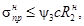
где Кв - коэффициент устойчивости. Для незатопляемых и периодически затопляемых участков газопроводов при стоянии воды не более 20 дней в году (10 %-ная обеспеченность) Кв принимается равным 1,2. Если стояние воды превышает 20 дней, Кв принимается равным 1,40;
Sэкв - эквивалентное сжимающее продольное усилие от расчетных воздействий изменения температуры и внутреннего давления, определяемое согласно п. 3.11 или 3.21, кгс;
Nкр - критическое продольное усилие трубопровода, зависящее от схемы прокладки и конструктивного решения и определяемое согласно п. 3.12 или 3.13, кгс;
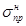
y3 - коэффициент снижения расчетного сопротивления металла труб; при расчете по растянутой зоне сечения y3 (sпр > 0) принимается равным единице, при расчете по сжатой зоне (sпр < 0) определяется по формуле
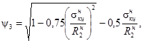
где 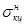
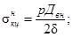
d - номинальная толщина стенки трубы, см;
Двн - внутренний диаметр трубы, см;
 - нормативное
сопротивление материала труб и сварных соединений, кгс/см2;
- нормативное
сопротивление материала труб и сварных соединений, кгс/см2;
С - коэффициент, принимаемый равным 1 для трубопроводов III и IV категории и 0,85 - для I и II категорий.
3.8. Для надземной (открытой) прокладки трубопроводов в подводных переходов, рассчитываемых с учетом продольной жесткости труб, кроме условия прочности на разрыв (1), производится проверка несущей способности по формуле
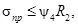
где sпр - максимальные продольные сжимающие или растягивающие напряжения в трубопроводе от расчетных нагрузок и воздействий (при наиболее невыгодном сочетании нагрузок), кгс/см2;
R2 - расчетное сопротивление, определяемое согласно СНиПу II-Д.10-62, кгс/см2;
y4 - коэффициент, учитывавший двухосное напряженное состояние металла труб; при расчете по растянутой зоне сечения (sпр > 0) принимается равным единице, при расчете по сжатой зоне (sпр < 0) определяется по формуле
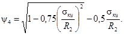
При расчете
балочных бескомпенсаторных переходов трубопроводов и подводных, проектируемых с
учетом продольной жесткости, разрешается при определении y4 в формуле (12)
вместо R2 принимать 0,9 (в обоих
членах):
(в обоих
членах):
sкц - кольцевые напряжения от расчетного внутреннего давления, определяемые по (6), кгс/см2.
При отсутствии колебаний трубопровода в ветровом потоке в многопролетных балочных системах надземной прокладки, а также в однопролетных системах без компенсации продольных деформаций разрешается при расчете учитывать возможность развития пластических деформаций над опорами с соблюдением условий:
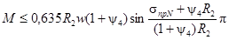
где М - изгибающий момент от расчетных нагрузок и воздействий, кгс × см;
sпрN - продольные осевые напряжения (положительные при растяжении) от расчетных нагрузок и воздействий, кгс/см2;
- максимальные суммарные продольные напряжения от нормативных нагрузок и воздействий, кгс/см2;
y3 и y4 - коэффициенты, определяемые соответственно по формулам (9) и (12).
При продольных осевых растягивающих напряжениях (sпрN > 0) эти коэффициенты принимаются равными единице.
Проверка продольной устойчивости надземных трубопроводов в плоскости действия поперечной нагрузки не производится, если изгибающий момент определяется с учетом продольно-поперечного изгиба.
Как правило, надземные переходы необходимо проектировать так, чтобы в них не возникали ветровые колебания. В противном случае необходима проверка прочности с учетом динамических напряжений или установка виброгасителей.
ПОДЗЕМНАЯ И НАЗЕМНАЯ (В НАСЫПИ) ПРОКЛАДКА ГАЗОПРОВОДА
3.9. Предельное состояние подземных и наземных (в насыпи) трубопроводов проверяется согласно пп. 3.6 и 3.7.
Для прямолинейных и выполненных упругим изгибом (r ³ Дн) подземных и наземных (в насыпи) участков трубопроводов, прокладываемых без специальных компенсирующих устройств при отсутствии пучения и просадок грунта продольные напряжения определяются по формулам (15) и (16).
Максимальные расчетные осевые продольные напряжения (с учетом работы металла труб в пластической стадии) определяются по формуле
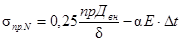
Максимальные суммарные продольные напряжения (с учетом изгиба) при упругой работе металла труб определяем по формуле
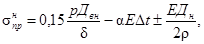
где a - коэффициент линейного расширения материала труб (для стали a = 12 × 10-6 1/град.);
Е - модуль упругости материала труб (для стали Е = 2,1 × 106), кгс/см2;
Dt - расчетный температурный перепад (принимается положительным при нагревании), °С;
р - рабочее (нормативное) давление в трубопроводе, кгс/см2;
Двн - внутренний диаметр труб, см;
Дн - наружный диаметр труб, см;
d - номинальная толщина стенки труб, см;
r - минимальный радиус кривизны оси трубы при упругом изгибе, см;
п - коэффициент перегрузки рабочего давления в трубопроводе, определяемый согласно СНиПу II-Д.10-62.
3.10. Продольная устойчивость согласно условию (7) проверяется на подземных и наземных (в насыпях) прямолинейных участках трубопровода и криволинейных участках, обращенных выпуклостью вверх. При наземной (в насыпи) прокладке, кроме того, проверяется достаточность поперечных размеров насыпи. Проверка продольной устойчивости подземных участков с горизонтальными и вертикальными кривыми, имеющими выпуклость вниз, производится так же, как и для прямолинейных участков.
3.11. Для прямолинейных и криволинейных участков, для которых расчетный радиус оси трубопровода r0 ³ 1000Дн, эквивалентное продольное усилие, кгс, определяется по формуле
где F - площадь поперечного сечения стенок трубы, см2;
sкц - кольцевые напряжения от расчетного внутреннего давления на данном участке, определяемые по формуле (6);
Dt - расчетный температурный перепад для рассматриваемого участка, положительный при нагревании.
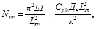
где Е - модуль упругости металла труб, кгс/см2;
I - момент инерции поперечного сечения трубы, см4;
Lкр - расчетная длина волны выпучивания, см.
Длина волны выпучивания, соответствующая минимальному значению критического усилия, равна:
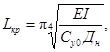
где Су0 - коэффициент нормального сопротивления, определяемый в соответствии с п. 3.18, кгс/см3;
Дн - наружный диаметр трубы, см.
Минимальное значение критического продольного усилия после подстановки в формулу (18) значения Lкр из (19) определяются по формуле
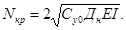
где Ср - коэффициент разгрузки, характеризующий пластическую работу грунта и определяемый в соответствии с п. 3.19, кгс/см2;
Lкр - расчетная длина волны выпучивания, см;
где r0 - расчетный радиус изгиба оси трубопровода, определяемый согласно п. 3.14 или пп. 3.24 - 3.29, см;
qпр - предельное сопротивление поперечным перемещениям трубы, определяемое согласно п. 3.15, кгс/см.
Исходя из расчетного радиуса изгиба, минимальное значение критического продольного усилия определяется по формуле
3.14. При прокладке подземного и наземного (в насыпи) трубопровода с упругим изгибом критическое продольное усилие определяется по формуле (23). Расчетный радиус изгиба r0 принимается равным радиусу упругого изгиба оси трубы r при выполнении следующего условия:
где a - угол поворота газопровода, град.;
r - радиус упругого изгиба оси трубы, см.
Если условие (24) не выполняется, то определяется расчетный радиус согласно пп. 3.24 - 3.29.
где qпт и qпр гр определяются согласно п. 3.16;
пг - коэффициент перегрузки для грунта, принимаемый равным 0,80.
3.16. При расчете продольной устойчивости подземного и наземного (в насыпи) трубопровода, имеющего в вертикальной плоскости выпуклость вверх, величины, входящие в формулу (25), определяются по следующим выражениям:
При расчете продольной устойчивости наземного (в насыпи) трубопровода, имеющего кривизну в горизонтальной плоскости, величины, входящие в формулу (25), определяются по следующим выражениям:
(28)
Из значений величин, подсчитанных по формулам (29) и (30), в расчет принимается меньшее.
3.17. Если грунт полностью или частично обводнен, то следует учитывать уменьшение его удерживающей способности в соответствии с «Указаниями по балластировке грунтом стальных трубопроводов, прокладываемых на обводненных участках», (ВСН I-31-71), М., ОНТИ BHИИCTa, 1971.
В формулах (26 - 30) приняты следующие обозначения:
qтр - вес газопровода с продуктом без коэффициента перегрузки, кгс/см;
qдоп - вес груза, или удерживающая способность анкерных устройств, отнесенная к одному погонному сантиметру трубопровода, кгс/см; если газопровод полностью или частично погружен в воду, необходимо учитывать фактический вес груза или удерживающую способность анкеров;
qпр гр - предельная удерживающая способность грунта при вертикальных поперечных перемещениях, кгс/см;
gгр - расчетный объемный вес грунта засыпки над трубопроводом, кг/см3;
jгр - расчетный угон внутреннего трения грунта, град.;
С - расчетное сцепление грунта, кгс/см2;
h0 - расстояние от верха засыпки до оси трубопровода, см;
H - расстояние от верха засыпки до низа трубы, см;
а, b - соответственно ширина насыпи по верху и по низу, см.
3.18. Коэффициент нормального сопротивления грунта, кгс/см3, определяется по формуле
где l0 - единичная длина трубопровода (l0 = 100 см);
Дн - наружный диаметр трубы, см;
Егр - модуль деформации грунта, определяемый в соответствии с главой СНиПа П.Б.1-62, кгс/см2;
mгр - коэффициент Пуассона грунта. Для глин и твердых и полутвердых суглинков mгр = 0,1 - 0,15; для тугопластичных суглинков mгр = 0,3 - 0,4 и для текучих mгр = 0,45 - 0,5; для супеси, в зависимости от консистенции, mгр = 0,15 - 0,30; для песков mгр = 0,20 - 0,25;
hгр - коэффициент снижения модуля деформации, имеющий следующие значения: для грунтов ненарушенной структуры hгр = 1 (при подземных трубопроводах, имеющих изгиб в горизонтальной плоскости); для насыпных грунтов hгр = 0,6; для обводненных грунтов hгр = 0,3.
3.19. Коэффициент разгрузки, кгс/см2, определяется по формуле
где qпр.гр - в зависимости от прокладки определяется по (27) или (29) и (30).
Величина H1, см, принимается при расчете устойчивости в вертикальной плоскости, равной H1 = h + Дн, т.е. расстоянию от поверхности засыпки (в уплотненном состоянии) до низа трубы. При проверке устойчивости трубопроводов, уложенных в насыпи с изгибом в горизонтальной плоскости, величина Н1 принимается равной половине ширины насыпи по низу трубы.
3.20. Если рассчитываемый на продольную устойчивость участок газопровода выполнен при помощи кривых вставок машинного гнутья с углами менее 9° или путем замены кривой ломаной линией из углов, выполненных при помощи гнутых или сварных колен и прямых вставок, а также если длина хорды упругой кривой меньше расчетной длины волны выпучивания, то проверка на устойчивость производится в соответствии с п. 3.7. При этом расчетный радиус изгиба r0 определяется согласно пп. 3.24 - 3.29, а эквивалентное продольное сжимающее усилие при r0 < 1000 Дн определяется согласно п. 3.21.
3.21. При расчетном радиусе изгиба r0 < 1000 Дн эквивалентное продольное сжимающее усилие определяется по формулам:
а) при выполнении условия
т.е. при отсутствии участка предельного равновесия грунта при продольных перемещениях трубопровода
где
б) при невыполнении условия (33), т.о. при наличии участка предельного равновесия грунта при сдвиге
где S0 - эквивалентное продольное сжимающее усилие для прямолинейного трубопровода, определяемое по формуле (17), кгс;
Lкр - расчетная длина волны выпучивания, определяемая в зависимости от расчетного радиуса изгиба по формуле (22), см;
r0 - расчетный радиус изгиба, определяемый в зависимости от схемы прокладки согласно пп. 3.24 - 3.29, см;
tпр - предельное сопротивление грунта продольным перемещениям трубы, определяемое в соответствии с п. 3.22, кгс/см;
Сх.о - обобщенный коэффициент касательного сопротивления грунта, определяемый в соответствии с п. 3.23, кгс/см3;
qпр - предельное сопротивление поперечным перемещениям трубопровода, определяемое согласно п. 3.15, кгс/см;
Ср - коэффициент разгрузки, определяемый по формуле (32), кгс/см2,
3.22. Предельное сопротивление грунта продольным перемещениям трубопровода определяется по формуле
где пг - коэффициент перегрузки для грунта, принимаемый равным 0,80;
qпт - положительная плавучесть трубопровода, определяемая по формуле (26), кгс/см;
gгр - расчетный объемный вес грунта засыпки над трубопроводом, кг/см3;
С - расчетное сцепление грунта, кгс/см2;
Сн - коэффициент, учитывающий образование свода естественного равновесия; Сн определяется в зависимости от относительной глубины заложения трубопровода h/Дн по графику (рис. 16);
h - высота засыпки над верхней образующей трубы, см;
Дн - наружный диаметр трубы, см.
3.23. Обобщенный коэффициент касательного сопротивления грунта Схо, кгс/см3, для песчаных и супесчаных грунтов принимается равным 0,19 - 0,33 (для сухих рыхлых песков - 0,19, для плотной влажной супеси - 0,33); для глин и суглинков от 0,21 до 0,41, в зависимости от плотности.
3.24. Расчетный радиус упругого изгиба следует определять в такой последовательности:
а) задаемся возможной величиной длины волны выпучивания;
б) по формулам (41 - 45), в зависимости от схемы прокладки, определяем в первом приближении расчетный радиус упругого изгиба. Taк как расчетная длина волны выпучивания фактически является неизвестной и зависит r0, то решение выполняем методом последовательных приближений;
в) по формуле (22) определяем расчетную длину волны выпучивания;
г) по вновь найденной длине определяем новое значение r0; затем расчет повторяем.
Обычно трех - четырех приближений достаточно для определения расчетной длины волны выпучивания;
д) зная расчетную длину волны выпучивания, по (21) или согласно найденному расчетному радиусу по (23) определяем критическое продольное усилие.
Допускается также применять графоаналитический метод определения расчетного радиуса упругого нагиба. По профилю намечается расчетный участок, где наиболее возможно выпучивание трубопровода. Из середины хорды, являющейся предполагаемой длиной волны выпучивания (Lпр), нужно восстановить перпендикуляр и определить расстояние до оси трубопровода (f0). При отсутствии обратных вогнутых кривых в вертикальной плоскости угол поворота обычно является вершиной волны.
Рис. 16. Зависимость коэффициента Сн, учитывающего образование свода естественного равновесия грунта при продольных перемещениях трубы, от относительной глубины заложения газопровода h/Дн:
1 - песчаные грунты; 2 - глинистые грунты.
При наличии обратных (вогнутых) кривых в непосредственной близости (20 - 30 м) от вертикального выпуклого угла поворота начало волны выпучивания следует принимать в середине обратной кривой. Сначала определяется по масштабу f0 (масштаб определяется из условия, что ошибка при определении f0 не превышает 5 %), а затем - расчетный радиус упругого изгиба по формуле
(40)
Далее расчет выполняется в соответствии с вышеизложенными положениями.
3.25. При прокладке подземного трубопровода по схеме (рис. 17), когда угол a ≤ 9°, длина хорды кривой менее длины волны выпучивания и длина каждого из прямолинейных примыкающих участков такова, что , расчетный радиус изгиба определяется по формуле
где a - угол поворота трубопровода в вертикальной плоскости, град.;
rк - радиус изгиба кривой, см;
Lкр - расчетная длина волны выпучивания, см.
3.26. При прокладке подземного трубопровода по схеме (рис. 18), когда расчетный участок состоит из двух кривых вставок и прямолинейного участка между ними, причем каждый из углов менее 9° и ,
расчетный радиус изгиба определяется по формуле
(42)
Рис. 17. Расчетная схема прокладки газопровода в случае, если длина хорды кривой менее расчетной длины волны выпучивания
Рис. 18. Расчетная схема трубопровода, когда на длине волны выпучивания имеются две кривые с прямолинейной вставкой между ними
Рис. 19. Расчетная схема трубопровода при одном угле поворота, выполненного при помощи колена
3.27. При прокладке подземного трубопровода по схеме (рис. 19), когда на расчетной длине лишь один угол поворота, выполненный с помощью колен, расчетный радиус изгиба определяется по формуле
3.28. При прокладке подземного трубопровода по схеме (рис. 20), когда на расчетной длине два угла поворота, выполненных с помощью колен, расчетный радиус изгиба определяется по формуле
(44)
3.29. Если при прокладке трубопровода кривая заменяется ломаной линией с равными углами, образованными коленами 3 - 6°, и равными расстояниями между ними (рис. 21) - расчетный радиус изгибa определяется по формуле
где n - число углов поворота на расчетной длине волны выпучивания.
Рис. 20. Расчетная схема трубопровода, когда поворот выполнен при помощи двух колен с прямолинейным участком между ними
Рис. 21. Расчетная схема при замене кривой ломаной линией с равными углами и одинаковыми расстояниями между ними
Рис. 22. Расчетная схема, определяющая рациональное размещение дополнительных устройств, обеспечивающих устойчивость углов поворота
3.30. Исходя из расчета на продольную устойчивость, участку с вертикальными выпуклыми углами поворота, выполненными с помощью колен или вставок машинного гнутья, обычно требуют дополнительного заглубления в грунт или закрепления против поперечных перемещений. Грузы или анкеры не следует распределять равномерно по всей длине волны выпучивания, их нужно сосредоточить вблизи вершины вертикального угла. Если предельную удерживающую способность при равномерном распределении нагрузки обозначить qпр, погонную удерживающую способность в окрестности вершины q2, а на примыкающих к вершине участках q1 (рис. 22), то относительная длина, на которой имеется пригрузка q2, определится из условия:
где .
ОПРЕДЕЛЕНИЕ ПЕРЕМЕЩЕНИЙ ГАЗОПРОВОДА В МЕСТАХ ЕГО ВЫХОДА ИЗ ГРУНТА
а) при отсутствии участка предельного равновесия грунта, критерием чего является выполнение условия (52),
б) при наличии участка предельного равновесия грунта
где
 (49)
(49)
(50)
При
(51)
Если пренебречь жесткостью компенсатора, т.е. принять hк = 0, то продольное перемещение определяется более простыми выражениями:
Критерием отсутствия участка предельного равновесия грунта является условие:
(53)
где
a - коэффициент температурного расширения материала труб (для стали a = 12 × 10-6 );
Dt - расчетный температурный перепад (положительный при нагревании), °С;
E - модуль упругости материала труб (для стали Е = 2,1 × 106 кгс/см2);
F - площадь поперечного сечения стенок трубы, см2;
sкц - кольцевые напряжения от расчетного внутреннего давления, определяемые по (6);
hк - жесткость компенсатора, т.е. отпор компенсатора от единичного продольного перемещения, кгс/см, согласно п. 3.32;
tпр - погонное предельное сопротивление грунта сдвигу, определяемое в соответствии с п. 3.22, кгс/см (hк = 0,8);
g - характеристика упругой работы грунта, см-1;
Дн - наружный диаметр трубы, см;
Схо - обобщенный коэффициент касательного сопротивления грунта, определяемый согласно п. 3.23, кгс/см3;
3.32. Жесткость компенсатора определяется по формуле
В формуле (55) величина Ск равняется:
для Г-образного компенсатора
(56)
где lк - вылет компенсатора, см;
для П-образного компенсатора Ск равняется значению А в формуле (31) СНиПа II-Д.10-62;
для L-образного компенсатора Ск равняется значению В в формуле (32) СНиПа II-Д.10-62.
Для других типов компенсаторов их жесткость определяется по правилам строительной механики с учетом коэффициента уменьшения жесткости для гнутых и сварных колен.
3.33. Расчет компенсаторов на прочность производится согласно СНиПу II-Д.10-62. Величины продольных перемещений являются, как следует из (47) и (48), функцией жесткости компенсатора, т.е. его линейных размеров. Поэтому параметры компенсатора определяются методом последовательных приближений. Вначале принимается жесткость компенсатора hк = 0 и определяется продольное перемещение по формулам (47а) или (48а); в соответствии со СНиПом II-Д.10-62 определяются размеры компенсатора и его жесткость исходя из необходимости компенсации перемещений с примыкающих участков подземного трубопровода, симметричных относительно компенсатора.
Затем с учетом фактической жесткости компенсатора по (47) или (48) находят действительное значение перемещения, по которому вновь определяют размеры компенсатора. Обычно двух приближений достаточно для выбора рациональных размеров компенсаторов.
3.34. Длины подземных участков, на которых происходит перемещение трубопровода к месту выхода из грунта, можно определить с необходимой для практики точностью по формулам:
а) при отсутствии участка предельного равновесия грунта (условие (52)
б) при наличии участка предельного равновесия грунта при продольных перемещениях
В формулах (57) и (58) приняты те же обозначения, что и в п. 3.31.
Дополнительный распор в рамном, арочном или прямолинейном переходе с компенсаторами, вызванный продольным перемещением, определяется по формулам:
а) при отсутствии участка предельного равновесия грунта при продольных перемещениях (условие (64)
(59)
б) при наличии участка предельного равновесия грунта
(60)
где
(61)
(62)
(63)
Условие отсутствия участка предельного равновесия грунта (tх ≤ tпр) имеет вид:
В п. 3.35 приняты те же обозначения, что и в п. 3.31. Нпост - распор, в надземном переходе от поперечной нагрузки, изменения температуры и давления (положителен при сжатии), кгс;
Так, например, для прямолинейного надземного перехода с компенсаторами величины распора Нпост и Nрас определяются по формулам:
(66)
где Lк - длина надземного компенсируемого участка трубопровода.
Для арочных переходов величиям Nпост описывается также выражением (65), с добавлением распора от поперечной нагрузки. Жесткость арочного перехода можно определять по приближенной формуле
(67)
где fа, la - соответственно стрела подъема оси арки и расчетный пролет, см.
ОПРЕДЕЛЕНИЕ РАССТОЯНИЙ МЕЖДУ КОМПЕНСАЦИОННЫМИ УСТРОЙСТВАМИ НА ПОДЗЕМНЫХ И НАЗЕМНЫХ (В НАСЫПИ) УЧАСТКАХ ГАЗОПРОВОДОВ
3.36. Компенсационные участки при подземной и наземной (в насыпи) прокладке трубопроводов устраиваются для уменьшения продольных напряжений в трубопроводе. Необходимость установки компенсаторов определяется невыполнением условий (4) и (8).
Уровень, до которого следует снизить продольные осевые напряжения, будет равен наименьшей из следующих величин:
(68)
где y2, y3 - коэффициенты, учитывающие двухосное напряженное состояние металла труб и определяемые соответственно по формулам (5) и (9);
R1,  - соответственно
расчетное и нормативное сопротивления материала труб, определяемые согласно
СНиПу II-Д.10-62, кгс/см2;
- соответственно
расчетное и нормативное сопротивления материала труб, определяемые согласно
СНиПу II-Д.10-62, кгс/см2;
Е - модуль упругости материала труб, кгс/см2;
Дн - наружный диаметр трубы, см;
r - радиус упругого изгиба, который рекомендуется принимать для подземных участков трубопроводов с частичной компенсацией продольных деформаций не менее 1500Дн, см.
3.37. Расстояние между компенсаторами на подземных или наземных (в насыпи) участках трубопроводов L определяется из решения уравнения:
Величина продольного перемещения подземного трубопровода в месте выхода из грунта равна:
где - величина осевых продольных напряжений (положительна при растяжении) определяемая согласно п. 3.36, кгс/cм2;
l = L/2 - расстояние от несмещающегося сечения трубопровода до места выхода трубопровода из грунта.
В п. 3.37 приняты те же обозначения, что и в п. 3.31.
Решение задачи выполняется методом последовательных приближений. Можно, задавшись размерами компенсатора, определить его жесткость (hк) и компенсирующую способность (D0) в соответствии со СНиПом П-Д.10-62 и п. 3.37, а затем по формуле (70) определить возможную длину подземного участка, с которой компенсируется данная деформация. Далее проверяют условие (71). Если оно не выполняется, то длину определяют из (73). Однако в этом случае недоиспользуется компенсирующая способность компенсатора.
Пренебрегая жесткостью компенсатора, т.е. принимая hк = 0, из (69) можно определить длину l, затем по (70) определить D0, по последней из условия прочности компенсатора найти его размеры и жесткость. Далее расчет повторяется в той же последовательности.
Определив величину l и hк, проверяют следующее условие:
Если условие (71) не выполняется, то расстояние между компенсационными участками определяют согласно п. 3.38.
3.38. Расстояние между компенсаторами на подземном и наземном (в насыпи) участках трубопровода (L = 2l) при наличии участка предельного равновесия грунта, несоблюдение условия (71), можно определить по приближенной методике из выражения:
Если отношение EFtпр/S0hк ≤ 0,05, то последним слагаемым в формуле (72) можно пренебречь.
Величина продольного перемещения подземного трубопровода в месте выхода на поверхность равна:
В п. 3.38 приняты те же обозначения, что и в п. 3.31.
Отметим, что компенсатор необходимо рассчитывать на суммарное продольное перемещение с обоих примыкающих к нему подземных участков, т.е. Dк = 2D0. в формуле (72) величину tпр следует определять согласно п. 3.22 по формуле (39) с коэффициентом перегрузки для грунта пг = 1,30, а в формуле (73) - с коэффициентом перегрузки пг = 0,80. В формулах (69) - (73) расчетный температурный перепад принят положительным при нагревании, а знак продольного усилия - положительным при растяжении.
РАСЧЕТ ПРЯМОЛИНЕЙНЫХ БЕСКОМПЕНСАТОРНЫХ ОДНОПРОЛЕТНЫХ БАЛОЧНЫХ ПЕРЕХОДОВ ГАЗОПРОВОДОВ
3.39. Прямолинейные бескомпенсаторные однопролетные переходы трубопроводов разрешается рассчитывать с учетом пластических деформаций согласно условиям (13) и (14) с проверкой отсутствия колебаний в ветровом потоке. Нагрузки, воздействия и их сочетания определяются в соответствии со СНиПом II-Д.11-62 и СНиПом II-Д.10-62. Продольное осевое усилие (sпрN) определяется в зависимости от изменения температуры и внутреннего давления, а расчетный изгибающий момент - с учетом продольно-поперечного изгиба для наиболее напряженного сечения трубопровода.
3.40. Изгибающий момент, кгс × см, от поперечной нагрузки для середины пролета и опорного сечения определяется по формулам:
где q - интенсивность равномерно распределенной поперечной нагрузки на открытом участке, определяемая согласно СНиПу П-Д.10-62, кгс/см. При воздействии вертикальных и горизонтальных поперечных нагрузок расчетная поперечная нагрузка (q) определяется, как их равнодействующая;
L - расстояние (пролет перехода) в свету между местами выхода трубопровода из грунта, см;
, - безразмерные коэффициенты изменения изгибающих моментов, учитывающие влияние примыкающих подземных участков трубопроводов и определяемые в соответствии с п. 3.41.
Поперечные перемещения трубопровода определяются по следующим формулам:
для середины пролета
для пяты перехода
(77)
где ЕI - изгибная жесткость трубопровода, кгс × см2;
, - безразмерные коэффициенты изменения перемещений, учитывающие влияние примыкающих подземных участков трубопроводов и определяемые в соответствии с п. 3.41.
3.41. Безразмерные коэффициенты , , и являются функцией величины n, характеризующей относительное защемление надземного перехода на примыкающих подземных участках, и определяются по графику (рис. 23) или по следующим формулам:
Рис. 23. График зависимости безразмерных параметров , , , , учитывающих влияние жесткости примыкающих к переходу подземных участков, от его характеристики n.
(81)
где
l 1/2 - полупролет перехода, см;
Дн - наружный диаметр трубы, см;
Суо - коэффициент нормального сопротивления грунта, кгс/см3, определяемый в соответствии с п. 3.18. В формуле (31) принимается, что h0 = ¥, hгp = 1.
3.42. Чистоту собственных колебаний основного тона (w0), рад/сек, надземного прямолинейного однопролетного балочного перехода трубопровода с примыкающими подземными участками (без специальных опор) можно определять по приближенной формуле
где l - полупролет перехода в свету, см;
q - погонный вес трубопровода, кг/см;
- коэффициент, учитывающий увеличение стрелки прогиба перехода без специальных опор по сравнению с переходом с защемленными опорами и определяемый согласно п. 3.41.
4.43. Продольные осевые напряжения (sпрN) кгс/см2, (положительные при растяжении) от изменения температуры и внутреннего давлении определяются по формуле
где sкц - кольцевые напряжения от расчетного внутреннего давления, кгс/см2, определяемые по формуле (6);
a - коэффициент линейного расширения материала труб (для стали a = 1,2 × 10-6 1/град.);
Е - модуль упругости материала труб (для стали Е = 2,1 × 106 кгс/см2);
Dt - расчетный температурный перепад (положительный при нагревании), °С.
3.44. Изгибающие моменты от продольного усилия, возникающего при изменении температуры и внутреннего давления, с учетом прогибов от поперечной нагрузки для середины пролета и опорного сечения определяются по формулам:
где fe - прогиб посредине пролета трубопровода от поперечной нагрузки, определяемый по формуле (76);
S0 - эквивалентное продольное сжимающее усилие
где
F - площадь поперечного сечения стенок трубы, см2;
Nкр - критическое продольное усилие для стержня с защемленными опорами, кгс;
(88)
где
ЕI - изгибающая жесткость трубы, кгс × см2;
l - полупролет перехода, см;
h1, h0 - безразмерные коэффициенты изменения изгибающих моментов, учитывающие влияние примыкающих подземных участков трубопроводов, определяемые согласно п. 3.45.
Полный (от поперечной нагрузки, внутреннего давления и температурного перепада) прогиб посредине пролета определяют по формуле
(89)
где fe - прогиб от поперечной нагрузки, вычисленной по формуле (76);
К1 - безразмерный коэффициент изменения прогибов, учитывающий влияние примыкающих подземных участков трубопроводов и определяемый согласно п. 3.45.
Рис. 24. График зависимости безразмерного параметра h1 от m2 и y
3.45. Безразмерные коэффициенты h1, h0, К1, являющиеся функцией жесткости подземного примыкающего к переходу участка и перехода, определяется по графикам на рис. 24 - 26 или по формулам (90) - (92):
Рис. 25. График зависимости безразмерного параметра h0 от m2 и y
Рис. 26. График зависимости безразмерного параметра К1 от m2 и y
где m2 - относительная жесткость перехода;
y - относительная жесткость примыкающего подземного участка;
3.46. Частота собственных колебаний (основного тона) перехода с учетом воздействия температуры, давления и влияния жесткости примыкающих подземных участков определяется по формуле
(97)
где w0 - частота собственных колебаний без учета воздействий температуры и давления, определяемая по формуле (83).
РАСЧЕТ ПОДВОДНЫХ БАЛОЧНЫХ ПЕРЕХОДОВ НЕБОЛЬШОЙ ПРОТЯЖЕННОСТИ
3.47. При проектировании подводных переходов через каналы и небольшие реки следует учитывать высокую продольную жесткость трубопроводов больших диаметров. Это позволит полностью или частично отказаться от балластировки русловой части газопровода, закрепляя его против всплытия на береговых участках.
Для закрепления трубопровода на береговых участках применяют засыпку грунтом, различные утяжелители (сплошную обетонировку труб, бетонные или чугунные грузы), анкерные устройства, а также используют в качестве балласта железобетонные ящики или плиты с грунтом.
При длине подводной части, превышающей расчетную, можно проектировать так называемые двухпролетные переходы, дополнительно закрепляя (в соответствии с расчетом) газопровод в средней части подводного участка.
3.48. Прямолинейные подводные балочные переходы трубопроводов разрешается рассчитывать с учетом пластических деформаций согласно условиям (13) и (14). Нагрузки, воздействия и их сочетания определяются в соответствии со СНиПом II-А.И-62 и СНиПом II-Д.10-62.
где - величина безразмерного параметра, учитывающего изгиб трубопровода на примыкающих к пароходу участках, определяется по формулам:
а) для однопролетного перехода
б) для двухпролетного перехода
(100)
Величины n1 и п2 определяются при решении следующих уравнений:
(102)
где
На рис. 27, 28 приведены графики зависимости безразмерных параметров п и в функции от ,
где q1 - погонная выталкивающая сила на подводной части перехода, определяемая согласно п. 3.52, кгс/см;
l1 - длина подводной части перехода, находящегося под воздействием выталкивающей силы, см;
q2 - расчетный погонный вес газопровода с учетом пригрузки, определяемый согласно п. 3.53, кгс/см;
l2 - длина береговых участков трубопроводов, на которых необходимо обеспечить величину пригрузки q2, l2 определяется после нахождения расчетного пролета подводной части перехода по формуле
Максимальная стрелка прогиба трубопровода под воздействием поперечной нагрузки (f), см, определяется по формулам:
где безразмерный коэффициент , учитывающий изгиб на примыкающих к пароходу участках трубопровода, определяется из выражений:
Рис. 27. Графики зависимости параметров п, и от при расчете однопролетных подводных переходов
Рис.
28. Графики зависимости параметров п, , ,  от при расчете двухпролетных
подводных переходов
от при расчете двухпролетных
подводных переходов
а) для однопролетного перехода
б) для двухпролетного
(107)
На рис. 27, 28 приведены графики зависимости безразмерных параметров f в функции от .
Для двухпролетного перехода определяется величина пригрузки (Q) кг, посредине пролета:
(108)
где
(109)
или по графику (см. рис. 28).
а) для однопролетного перехода
(111)
б) для двухпролетного перехода
(112)
Безразмерные параметры , , определяются по графикам (рис. 23, 29) или по формулам:
Рис. 29. Графики для определения , и  при расчете
двухпролетных переходов
при расчете
двухпролетных переходов
(113)
(114)
где
В формулах (110 - 115) приняты следующие обозначения:
Дн, I - соответственно наружный диаметр трубы, см, и момент инерции сечения стенок трубы, см4;
Е - модуль упругости материала трубы (для стали Е = 2 × 1 × 106);
Су0 - коэффициент нормального сопротивления грунта, определяемый согласно п. 3.18, кгс/см3.
Максимальные прогибы трубопровода определяются в этой случае по формуле (105), причем безразмерный параметр подсчитывается по формулам:
а) для однопролетных переходов
(116)
б) для двухпролетных переходов
(117)
На
рис. 23,
29
приведены графики для нахождения этих величин в функции от n. Для двухпролетного перехода
величина пригрузки посредине определяется также по формуле (104),
причем безразмерный параметр  подсчитывается по формуле
подсчитывается по формуле
(118)
или находится по графику (см. рис. 29).
3.51. В случае комбинированной балластировки трубопровода на береговых участках в качестве расчетного изгибающего момента принимается наибольшее значение из вычисленных по формулам пп. 3.49 и 3.50.
3.52. Погонная выталкивающая сила (q1), кгс/см, на подводной части перехода определяется по формуле
где
gв - объемный вес воды с учетом растворенных в ней солей, кгс/см3;
qтр - погонный вес трубопровода без коэффициента перегрузки, кгс/см;
qдоп - дополнительная пригрузка подводной части перехода, кгс/см;
h - высота засыпки подводной части трубопровода, см;
gвзв - объемный вес взвешенного в воде грунта, кгс/см3.
Удерживающую способность грунта в пределах обводненного участка (последнее слагаемое в формуле (119) не следует учитывать, если возможен размыв дна русла или такая скорость точения воды, при которой происходит унос частиц грунта со дна водоема. Удерживающую способность грунта при пересечении каналов и рек не следует учитывать.
где
nг - коэффициент перегрузки для грунта, принимаемый равным nг = 0,8;
qпр гр - предельная удерживающая способность грунта, определяемая по формуле (27), кгс/см;
Q - расчетная несущая способность анкерного устройства или вес груза), определяемая в соответствии с «Указаниями по применению анкерных устройств для закрепления трубопроводов». (М., ОНТИ ВНИИСТа, 1968) и «Техническими условиями на конструкцию, изготовление и поставку устройств анкерных и анкеров винтовых типов АЛ-4-40 и АЛ-47-40 (М., ОНТИ ВНИИСТа, 1970), кгс;
а - расстояние между утяжеляющими грузами или анкерами, см.
3.54. При проектировании балочных подводных переходов необходимо предусмотреть прокладку подводной части трубопровода с начальным прогибом (обратным подъему под воздействием выталкивающей силы воды), значение которого должно быть не менее величины, полученной по формуле (105).
Продольные напряжения (положительные при растяжении) в этом случае определяются по формулам:
при расчете по сжатой зоне поперечного сечения
при расчете по растянутой зоне поперечного сечения
где
sкц - кольцевые напряжения от расчетного внутреннего давления, кгс/см2;
a - коэффициент температурного расширения материала труб (для стали a = 12 × 10-6 1/град);
Dt - расчетный температурный перепад (принимается положительным при повышении температуры), °С.
3.55. При наличии на береговых участках вертикальных выпуклых кривых проверяется устойчивость положения трубопровода на этих участках в соответствии с разделом 2, а также продольная устойчивость подводной части перехода.
Уравнение, описывающее область устойчивого равновесия, имеет вид:
где
или
L - полная длина подводной части перехода, см;
l2 - длина берегового участка, на котором осуществлена пригрузка; l2 определяется по формуле (104);
S0 - эквивалентное продольное сжимающее усилие, определяемое по (17), кгс;
Сy0 - обобщенный коэффициент нормального сопротивления, определяемый по (31), кгс/см3.
Устойчивость положения можно также проверить при помощи графика (рис. 30) по подсчитанным по формулам (124), (125) или (126) значениям m2 и k.
Рис. 30. График для проверки устойчивости бескомпенсаторного перехода
ПРИЛОЖЕНИЕ
ПРИМЕРЫ РАСЧЕТА
1. Определить из условия прочности максимальные расчетные температурные перепады для подземного газопровода 1420´17,2 мм, прокладываемого на участках III категории при рабочем (нормативном) давлении Р = 75 кгс/см2. Временное сопротивление металла труб sвр = 5700 кгс/см2. Согласно СНиПу П-Д.10-62 расчетное сопротивление
R1 = 0,61 sвр = 0,61 × 5700 = 3477 кгс/см2.
По формуле (6) подсчитываем расчетные кольцевые напряжения от внутреннего давления:
Согласно п. 3.6 и формуле (5) коэффициент снижения расчетного сопротивления равен:
а) при sпр N > 0,
б) при sпр N < 0
Из условия (4) с учетом формулы (15) находим:
а) абсолютную величину максимального отрицательного температурного перепада
б) максимальную величину положительного температурного перепада
2. Определить из условия прочности минимальный радиус упругого изгиба оси трубопровода 1420´17 мм, проложенного на участках III категории при рабочем (нормативном) давлении Р = 75 кгс/см2 и нормативном положительном температурном перепаде Dt = 70 °С. Предел текучести материала труб sгек = 4200 кгс/см2.
По формуле (10) подсчитываем кольцевые напряжения от рабочего (нормативного) давления:
По формуле (9) находим коэффициент снижения расчетного сопротивления при расчете по сжатой зоне сечения:
Из условия (8) с учетом формулы (16) определяем минимальный радиус упругого изгиба оси газопровода:
3. Проверить выполнение условия продольной устойчивости подземного участка трубопровода 1420´17 мм, проложенного упругим изгибом r = 2000 м в вертикальной плоскости выпуклостью вверх с углом поворота a = 6°.
Глубина заложения от верха трубы h = 80 см; расчетный положительный температурный перепад Dt = 70 °С; рабочее (нормативное) давление Р = 75 кгс/см2; характеристика грунта: расчетный объемный вес грунта gгр = 1,5 × 10-3 кгс/см3; расчетный угол внутреннего трения j1р = 24°; расчетное сцепление С = 0,01 кгс/см2; модуль упругости грунта Егр = 250 кгс/см2; коэффициент Пуассона грунта mгр = 0,2; коэффициент касательного сопротивления грунта Схо = 0,20 кгс/см3.
Геометрические характеристики трубы: площадь поперечного сечения стенок F = 750 см2; момент инерции сечения I = 1847000 см4; погонный вес qтр = 5,89 кгс/см.
По формуле (6) кольцевые напряжения от расчетного внутреннего давления sкц = 3516 кгс/см2.
По формуле (17) определяем эквивалентное продольное сжимающее усилие:
По формуле (26) qпт = qтр = 5,89 кгс/см; по формуле (27) находим предельную удерживающую способность грунта:
По формуле (25) подсчитываем предельное сопротивление поперечным перемещениям:
Проверяем выполнение условия (24). По формуле (32) подсчитываем коэффициент разгрузки:
,
По формуле (22) находим расчетную длину волны выпучивания при r0 = r:
Lкр = 8170 см = 81,7 м; длина хорды кривой .
Таким образом, 20900 > 8170 см, т.е.L0 > Lкр. Условие (24) выполнено.
Тогда критическое продольное усилие определяется по формуле (23)
Из условия продольной устойчивости (7)
т.е. продольная устойчивость газопровода на данном участке при вышеприведенных условиях обеспечена.
4. Определить из условия продольной устойчивости максимальный температурный перепад для подземного участка трубопровода, выполненного с помощью колена при угле поворота a = 3° (рис. 19). Глубина заложения h = 140 см, кроме того, с шагом 4,0 м расположены анкерные устройства диаметром 400 м, имеющие несущую способность Q = 10,5 тс.
Физико-механические характеристики грунта те же, что и в примере 3.
Рабочее (нормативное давление Р = 75 кгс/см2. По формуле (27) qпр.тр = 1,5 × 10-3 × 142 (221 - 0,39 × 142) + 1,5 × 10-3 × 2212 × tg 16°48¢ + = 59,7 кгс/см,
по формуле (25)
по формуле (32)
Задаемся длиной волны выпучивания Lкр = 60 м. По формуле (43) находим расчетный радиус изгиба:
по формуле (22)
По формуле (43)
по формуле (22)
Задаемся Lкр = 8,6 × 103 см. По формуле (43)
по формуле (22)
Принимаем Lкр = 8720 см; r0 = 6,7 × 104 см.
По формуле (39)
При по графику (см. рис. 16) Сн = 0,45.
По формулам (37)
По формуле (36)
По формуле (35)
по формуле (23)
Из условия устойчивости (7)
Проверяем условие (33):
Тогда из (34) находим:
По формуле (17)
Количество анкеров при их расположении на длине волны выпучивания Lкр = 87,2 м с принятым шагом 4 м будет равно 87,2/4,0 » 22 шт.
Если анкеры поместить вблизи вершины с шагом 1,5 м, то длина, на которой они будут расположены, определится из условия (46):
где qпр = 79,9 кгс/см; q1 = 0,8 × 59,7 + 5,9 = 53,6 кгс/см;
Длина, на которой необходимо расставить анкеры (см. рис. 22) равна:
Необходимое количество анкеров равно:
21,4/1,5 = 15 шт., т.е. уменьшится на = 36 %.
5. Определить величину продольных перемещений подземного участка трубопровода 1420´17 мм в место выхода его из грунта и подобрать размеры П-образного компенсатора с учетом компенсации с обеих сторон.
Характеристика грунта:
расчетный объемный вес грунта gгр = 1400 кг/м3;
расчетный угол внутреннего трения jтр = 15°; сцепление С = 0; обобщенный коэффициент касательного сопротивления грунта Схо = 0,19 кгс/см3; глубина заложения h = 100 см; рабочее (нормативное) давление газа Р = 75 кгс/см2; расчетный положительный температурный перепад Dt = 70°.
По формуле (39) находим предельное сопротивление грунта продольным перемещениям трубопровода:
При h/Дн = 100/142 = 0,705 по графику рис. 16 находим Сн = 0,35;
tnp = 0,80(5,9 × 0,268 + 2 × 1,4 × 10-3 × 0,35 × 1422 × 0,268) = 15,3 кгс/см2.
По формуле (54) определяем характеристику упругой работы грунта:
Пренебрегая жесткостью компенсатора, т.е. принимая hк = 0, проверяем условие (52):
Тогда по формуле (48a) определяем продольное перемещение трубопровода в месте выхода из грунта:
Учитывая симметрию подземных участков относительно компенсатора и примечание п. 8.22 СНиПа П-Д.10-62, находим расчетное перемещение для определения параметров компенсатора:
По формуле (34) СНиПа П-Д.10-62 sком = R2 - 0,5 sкц = 3200 - 0,5 × 3520 = 1440 кгс/см2.
По формуле (38) СНиПа П-Д.10-62 ; rк = 5Дн = 5 × 142 = 710 см; d = 2 см; rc = 69 см; .
По формуле (37) СНиПа П-Д.10-62 .
По формуле (38) СНиПа П-Д.10-62 .
Принимаем lк = 28 м, lп = 25 м.
По формуле (31)
По формуле (31) СНиПа П-Д.10-62 физико-механические характеристики грунта те же, что и в примере 3. Механические характеристики металла труб:
sгек = 4200 кгс/см2; s6р = 5700 кгс/см2. Геометрические характеристики трубы: F = 879 см2; I = 2156000 см4; W = 30370 см3.
Для участков III категории согласно СНиПу П-Д.10-62
R2 = 0,76sгек = 3200 кгс/см2.
По формуле (31) определяем коэффициент нормального сопротивления грунта с учетом п. 5.3, т.е. при h0 = ¥, hгp = 1.
По формуле (82) коэффициент, характеризующий относительное защемление надземного перехода на примыкающих подземных участках, равен:
По формулам (78) и (79) или по графикам (см. рис. 23) находим безразмерные коэффициенты изгибающих моментов:
По формулам (74) и (75) определяем изгибающие моменты:
от расчетной поперечной нагрузки
от нормативной нагрузки
По формуле (80) или по графику (см. рис. 23) подсчитываем безразмерный коэффициент прогиба:
По формуле (76) находим величину стрелки прогиба посредине пролета:
от расчетной нагрузки
от нормативной нагрузки
По формуле (6) подсчитываем кольцевые напряжения от расчетного внутреннего давления:
По формуле (10) определяем кольцевые напряжения от нормативного внутреннего давления:
По формуле (87) эквивалентное продольное сжимающее усилие равно:
от расчетных воздействий
от нормативных воздействий
Определяем вспомогательные параметры для вычисления коэффициентов h1 и h0, учитывающие влияние примыкающих подземных участков.
По формуле (93) определяем:
а) для расчетной нагрузки
б) для нормативной нагрузки m2 = 0,176.
По формуле (94) находим:
По формуле (96) определяем:
а) для расчетной нагрузки
б) для нормативной нагрузки n2 =41,1.
По формуле (95) находим:
а) для расчетной нагрузки
б) для нормативной нагрузки
l = 7,630.
По формуле (90) находим:
а) для расчетной нагрузки
б) для нормативной нагрузки
h1 = 1,31.
По формуле (91) или по графикам (на рис. 24 - 25) определяем:
а) для расчетной нагрузки
б) для нормативной нагрузки h0 = 0,92;
По формулам (85) и (86) определяем изгибающий момент:
от действия расчетных нагрузок и воздействий
от нормативных нагрузок и воздействий
Суммарный изгибающий момент от расчетных нагрузок и воздействий равен:
в опорном сечении
в середине пролета
Суммарный изгибающий момент от нормативных нагрузок и воздействий равен:
в середине пролета
По формуле (84) продольные осевые напряжения равны:
от расчетных воздействий
от нормативных воздействий
По формуле (12) и (9) определяем коэффициенты, учитывающие снижение расчетного сопротивления:
По формуле (13) подсчитываем:
Таким образом, условие прочности удовлетворено, так как 16,65 × 106 < 27,23 × 106.
Максимальные продольные напряжения от нормативных нагрузок и воздействий равны:
Таким образом, условие (14) тоже удовлетворено, так как 1218 < 1790.
При необходимости расчетный пролет можно несколько увеличить, для чего необходимо произвести новый расчет при большем значении пролета.
8. Проверить прочность и устойчивость однопролетного подводного балочного перехода трубопровода диаметром 1420´20 мм пролетом l = 32 м при рабочем (нормативном) давлении Р = 75 кгс/см2, расчетном положительном температурном перепаде Dt = 60° и отрицательном -Dt = -40 °С. Высота засыпки на примыкающем участке h = 80 см, дополнительная пригрузка = 3,7 кгс/см.
Грунт засыпки супесчаный с объемным весом gгp = 1,6 т/м3. Расчетный угол внутреннего трения грунта jтр = 20°, расчетное сцепление грунта С = 0,07 кгс/см2, объемный вес воды gв = 1 т/м3.
Физико-механические характеристики металла и геометрические характеристики поперечного сечения трубы приведены в примере 7 (qтр = 6,9 кгс/см).
По формуле (119) находим погонную выталкивающую силу, кгс/см, на подводной части перехода при qдоп = 0;
По формуле (27) определяем предельную удерживающую способность грунта:
По формуле (120) подсчитываем расчетную нагрузку на береговых участках с учетом дополнительной пригрузки трубопровода:
По формуле (103) находим:
Из уравнения (101) или по графику на рис. 27 определяем, что при q = 4,59 n1 = 0,293.
По формуле (104) длина береговых участков трубопровода, на которых необходимо обеспечить пригрузку q2, равна:
По формуле (99) или по графику на рис. 27 подсчитываем величину безразмерного параметра изгибающего момента:
По формуле (98) находим изгибающий момент:
По формуле (6) подсчитываем кольцевые напряжения от расчетного внутреннего давления:
По формуле (121) определяем продольные напряжения от изменения температуры и внутреннего давления при расчете по сжатой зоне сечения:
По формуле (122) подсчитываем продольные напряжения от изменения температуры и внутреннего давления при расчете по растянутой зоне сечения:
Продольные напряжения в трубопроводе от действия изгибающего момента равны:
Суммарные продольные напряжения в трубопроводе в сжатой зоне сечения равны:
Суммарные продольные напряжения в растянутой зоне сечения равны:
По формуле (12) определяем коэффициент, учитывающий работу металла при двухосном напряженном состоянии:
Таким образом, условие прочности (11) выполняется как в сжатой, так и в растянутой зонах сечения:
При необходимости расчетный пролет можно несколько увеличить, повторив расчет при новом значении величины пролета.
По формуле (17) находим эквивалентное продольное сжимающее усилие:
По формуле (124) подсчитываем:
По формуле (126) определяем:
Уравнение, описывающее область устойчивого равновесия подводной части перехода (123), также выполняется:
При наличии на береговых участках вертикальных выпуклых кривых проверяется устойчивое положение трубопровода на этих участках согласно разделу 2.
По формуле (106) или по графику на рис. 27 определяем безразмерный параметр стрелки прогиба:
По формуле (105) подсчитываем максимальную стрелку прогиба трубопровода под воздействием поперечной нагрузки:
СОДЕРЖАНИЕ